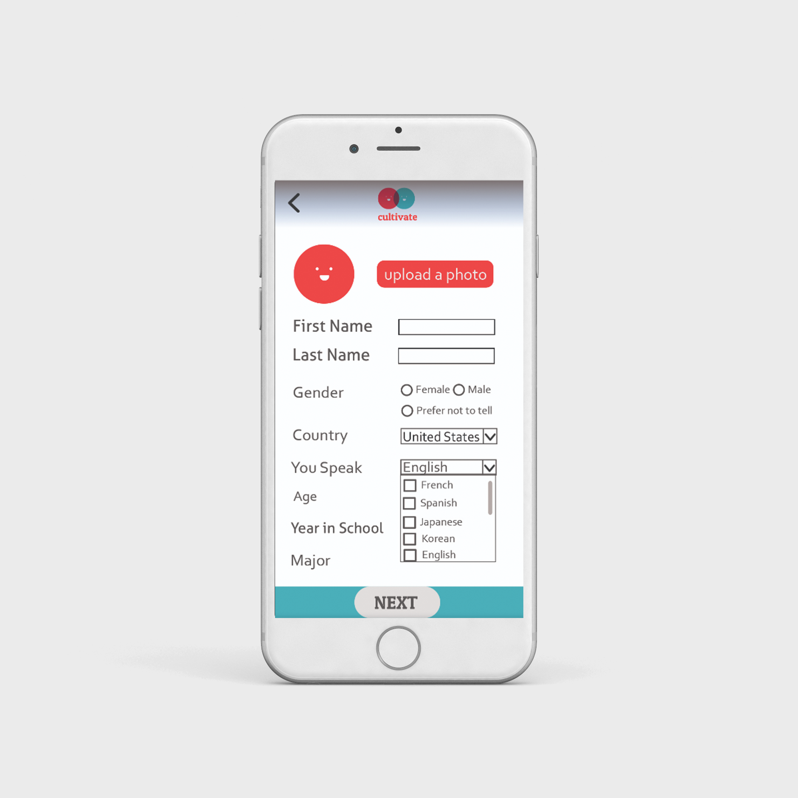
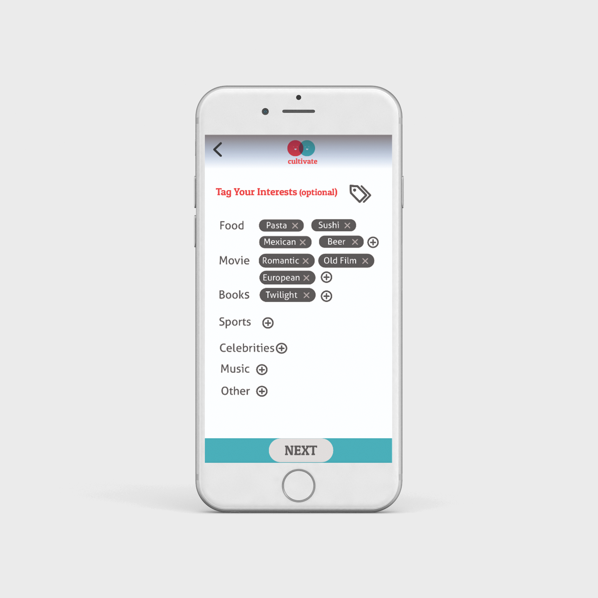
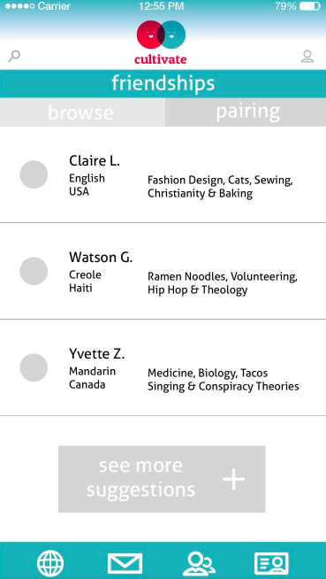
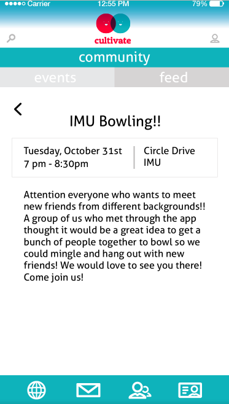
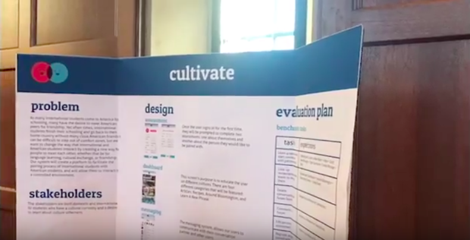

As many international students come to America for schooling, many have the desire to meet American peers for friendship. Yet often times, international students finish their schooling and go back to their home country without many close American friends. My team and I had a vision to create a platform for domestic and international IU students, who have a desire to learn about culture otherness, to interact.
Recommendation & Rational
It can be difficult to step out of comfort zones, but we believe that it is beneficial for students from different backgrounds to engage whether that be for language learning, cultural exchange, or friendship. Our system facilitates the pairing process of International students with American students, and will allow them to interact in a controlled environment.
My team and I engaged with international student groups, international conversation partner groups and organizations on campus to garner support and to learn from their broad experiences. We conducted interviews with individuals students, as well as with representatives from these organizations.
Implementing user experience design techniques and tools such as the following, all contributed to the mobile application design we created:
secondary research
requirements gathering
interviews and surveys
sketching and wireframing
user flows & storyboards
paper prototyping
focus groups
interactive prototyping using InVision
usability testing & heuristics evaluation


Pairing assessment
The system features two personal assessments that allow the matching system to pair them with someone they express interest in engaging with. They are then paired with a "conversation partner" and are prompted to send them a message. They are also given the option to reassess for a new partner.

Conversation Partner match and suggestions
The Friendships section allows users to view the profile(s) of their conversation partner(s) as well as to browse other suggested users to start a conversation with. Those conversations are housed within the inbox of the messaging feature.

Community: Forum, event feed and individual event page
The Community feature exists to encourage engagement within the diverse community with the forum and events sections. Users post content and get responses from other users on the posts. The forum feed is populated by these user generated posts. The event page allows users to create and publicize community events and meetups.
Dashboard and featured article
For a returning user, the default landing screen is called the dashboard. This screen’s purpose is to educate the user on different cultures and to celebrate otherness. There are four different categories that will be featured: Articles, Recipes, Around Bloomington, and Learn A New Phrase.
Evaluation
A series of usability tests and subsequent interviews helped us evaluate our system by:
Providing information about the ease of navigation between the user interfaces
Informing about the effectiveness in facilitating conversation between culturally different users
The usability tests consisted of a series of benchmark tasks weighing them against our expected measurements for each task (ie. path users took, time to complete and number of interactions), and follow up interview questions for each prototypical user.
Our team met together frequently to discuss our insights, and to iterate on user interfaces and the prototypes.

My team members and I presented our research, and design solution at the 2017 Fall Research Symposium at Indiana University.
Impact
Based on our evaluation and the feedback we received, we were able to iterate on the initial prototype we had created and produce a more refined version that was more effective in meeting our goal of facilitating conversation between culturally different users. I believe that with future iterations, this mobile solution could be a great way for IU students from different backgrounds to become friends and learn from their diverse experiences, but that the high fidelity prototype needs additional consideration. The interfaces were all designed by different members of our team, so that everyone got a chance to engage in the design process, but I do not believe this was the best way to approach it. The interfaces are inconsistent with one another and do not use a cohesive design language.
Credit
This team consisted of:
Yuhan Yang - Task Schedule Monitor & Meeting Scheduler
Rachel Dorsett - Report Integrator
Ashley Bates - Presentation Creator
Myself - Project Leader
As project leader, I lead meeting discussions, summarized meeting results, kept the team on track and directed next steps. I communicated with students and International student organizations, directed interviews and usability tests, compiled reports and created wireframes. My team and I worked together to create the high fidelity InVision prototype. We split up the user interfaces by category and each created them for a few features based on the paper prototypes. I created the user interfaces for the Friendship feature (browse and pairing) as well as the Community feature (events and feed). We each uploaded our individual UIs to the team InVision and worked together to create a actionable prototype.